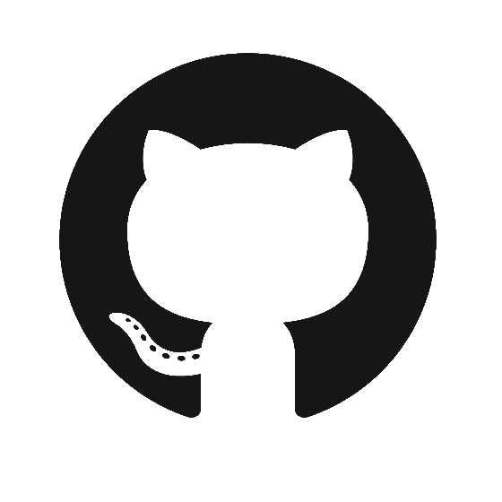

Ce site d'une complexité hors-pair est créé dans le but de s'entrainer à user des bonnes manières de la programmation. Semaine intensive
En effet dans le courrant de notre première semaine étudiante, à l'école Hetic situé au 27 Bis Rue du Progrès, 93100 Montreuil. Nous avons alors eu l'occasion de créer un court métrage de toutes pièces avec 5 collègues.
Les premiers instants de la colaboration ont laissé place à une présentation oral de chaque membre.
Peu à peu, nous avons suivi une piste.

Ce thème plaisait à l'ensemble du groupe mais plusieurs autres thèmes étaient également en concurrence:
- La relation amoureuse entre un humain et une Intéligence Artificielle
- L'inter-connexion des hommes grace à la connexion aux réseaux
- L'hisoire d'un astronaute pouvant suivre la naissanxce de son fils sur internet alors qu'il se trouve dans l'espace
- L'enfance et l'accès à internet.
Nous avons donc choisi le sujet sur l'interconnexion des hommes grâce à la connexion aux résaux. Partant d'un sujet bien défini et très concret les iées ont fourmillées. Vous pouvez le visionner à l'adresse suivante Ce projet m'a permis de travailler en équipe avec des perosnnes inconnus. Cette semaine porte bien son nom, le court métrage a été totalement réalisé en deux jours. Je remercie l'enceinte de l'établissement scolaire auquel j'appartient de m'avoir permis de vivre une expérience aussi enrichissante. Et je remercie également mes camrades, Pierre Secher, Jules Dever, Carlo Berni, Hanna Bergel et Jasmine.
Comment me contacter ?
